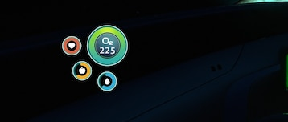
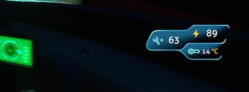
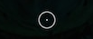
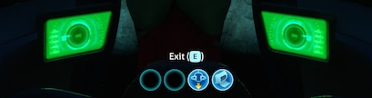
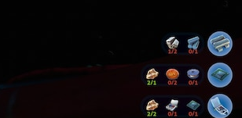
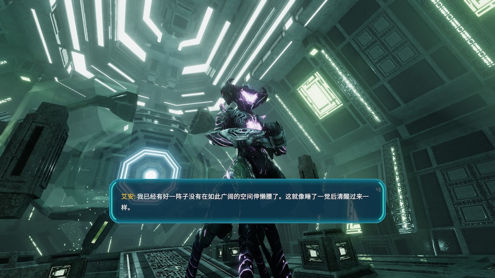

Evidence-based reference board. Every component below is derived from actual in-game screenshots.
Evidence 01
Survival Meters
Source:subnautica/sn07_1131.jpg (bottom-left crop). Four circular meters arranged in a cluster against the underwater environment. The background is fully transparent—no panel behind them.

Original crop — 358×152px from sn07_1131.jpg
Replication
O2225
Observed: Large O2 circle (~2.4× diameter of small circles) with bright green/aqua border, white "O2" and "225" inside. Three smaller circles arranged diagonally to the left: red-bordered circle contains a white ring with dark center (eye/donut shape); yellow-bordered circle contains a white arc segment on dark fill (gauge); blue-bordered circle contains a light blue teardrop. All have dark translucent fills. No rectangular panel behind the cluster. Text is white, sans-serif, centered.
Evidence 02
Vehicle Status Panel
Source:subnautica/sn07_1131.jpg (bottom-right crop). Two separate pointed-tab blue panels: a larger one for wrench/lightning readouts, a smaller one below for temperature. No hard corners—all curves.

Original crop — 410×152px from sn07_1131.jpg
Replication
🔧63⚡89
14°C
Observed: Two separate blue translucent panels. Top: larger pointed-tab panel (pointed left end, rounded right end) with cyan border, containing white wrench icon + white "63" and yellow lightning bolt + yellow "89". Bottom: much smaller rounded capsule (no pointed end, fully rounded) with slightly darker blue fill and cyan border, containing yellow thermometer + yellow "14°C". Gap of ~8px between panels. No hard corners.
Evidence 03
Depth & Compass
Source:subnautica/sn07_1131.jpg (top-center crop). Curved compass strip with depth numbers above and cardinal directions below.
Original crop — 409×108px from sn07_1131.jpg
Replication
270m300
SWW
Observed: Two numbers at top: "270" in white with smaller "m" suffix, "300" in yellow/amber. Beneath them, a curved arc split into two colors: left half cyan, right half yellow. Small tick marks below the arc. "SW" and "W" labels below ticks in yellow/gold. Yellow downward-pointing triangle at center indicates heading. Dark shapes on edges suggest helmet/visor framing.
Evidence 04
Crosshair
Source:subnautica/sn07_1131.jpg (center crop). Minimalist centered reticle with small dot and short radial arms. Very low opacity outer ring.

Original crop — 103×43px from sn07_1131.jpg
Replication
Observed: Small white center dot (~5px). Four short radial lines extending outward (top, bottom, left, right) approximately 12–14px long, ~1.5px thick, white at ~65% opacity. Faint outer ring circle at very low opacity (~8%). Overall size ~40–45px diameter. Clean, minimal, no color.
Evidence 05
Hotbar & Action Prompt
Source:subnautica/sn07_1131.jpg (bottom-center crop). "Exit [E]" prompt centered above four circular slots. Empty slots show dark fill with bright cyan ring; filled slots show blue background with item icon.

Original crop — 409×108px from sn07_1131.jpg
Replication
Exit [E]
🧪
✋
Observed: White text "Exit [E]" centered above slot row, sans-serif, small. Four circular slots (~36px) in horizontal line with even spacing. Empty slots: dark interior (#00080a-ish) with bright cyan/aqua 2px border. Filled slots: medium blue interior with white/light icon. Slots 3 and 4 filled; 1 and 2 empty.
Evidence 06
Resource Requirements Grid
Source:subnautica/sn07_1131.jpg (top-right crop). Circular resource icons arranged in a 3×4 grid with fractional counts below. Green text when requirement met; red when unmet.

Original crop — 308×151px from sn07_1131.jpg
Replication
📋
2/2
💎
0/1
⚙️
🥞
2/1
🍊
0/1
🥣
0/1
📱
🥗
2/2
📚
0/1
📖
0/1
Observed: Circular icons (~32px) in grid, dark fill with subtle border. Fraction text below each: green when current ≥ required, red when current < required. Rightmost column appears to contain larger action/category buttons with blue-tinted fill. No visible panel behind the grid.
Evidence 07
Dialogue Subtitle Box
Source:below-zero/bz02_6995.jpg. A wide rounded rectangle with bright cyan border, floating above the bottom of the screen. Speaker name in yellow, dialogue in white.

Original screenshot — bz02_6995.jpg (cropped to show subtitle)
Replication
Al-An:
You are... different. I will observe.
Observed: Pill-shaped container with large border-radius (~25px). Border is solid bright cyan (#00ffff). Background is dark teal with strong transparency. Speaker name is bright yellow/gold. Body text is plain white. Box floats above bottom edge with generous padding. No visible panel behind it extending to screen edges.
Extracted Colors
Palette from UI Evidence
Approximated hex values sampled from the UI elements in sn07_1131.jpg and bz02_6995.jpg. These are visual approximations, not exact code values from the game engine.
O2 Ring
sn07 bottom-left
Bright green/aqua circle border
Health Ring
sn07 bottom-left
Red/orange small circle border
Food Ring
sn07 bottom-left
Yellow/gold small circle border
Water Ring
sn07 bottom-left
Cyan/teal small circle border
Vehicle Panel
sn07 bottom-right
Medium-dark blue translucent fill
Panel Border
sn07 bottom-right
Lighter cyan outline on vehicle HUD
Warning / Temp
sn07 bottom-right
Yellow for power and temperature values
Subtitle Border
bz02 bottom-center
Bright cyan dialogue box outline
Speaker Name
bz02 bottom-center
Yellow/gold for speaker label
UI Text
sn07 / bz02
Pure white for numbers and labels
Environment Reference
Biome Mood
Actual in-game screenshots from this repository, used to understand what the UI must read against.